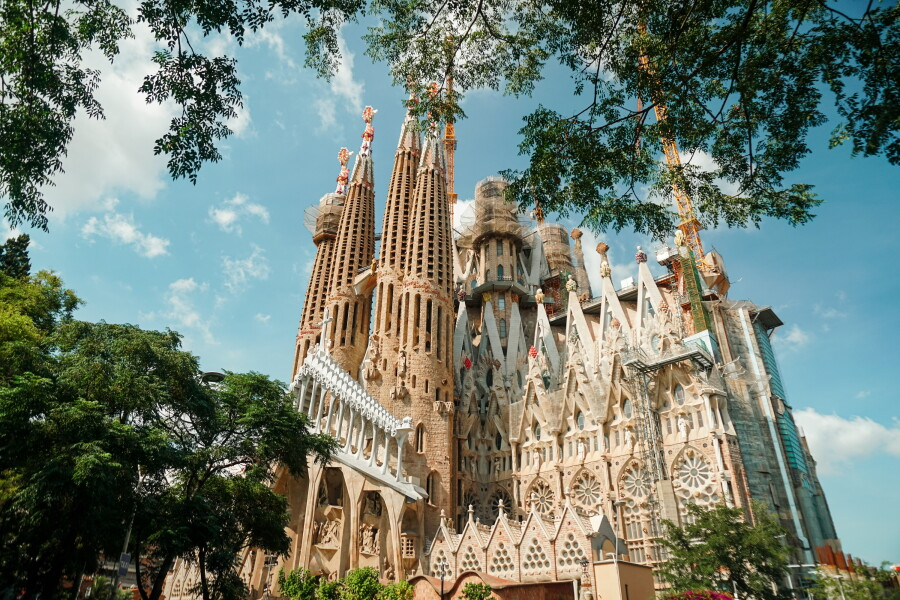

Országok amiket megszeretnék látogatni!
Nagy álmom, hogy egyszer minél több országot meglátogassak és
bejárjam a világot. Nagyon érdekelnek más országok kultúrái,
hagyományai, ételei és az ott élő emberek mindennapjai.
Jó érzés lenne olyan helyeket személyesen látni, amelyeket eddig
csak képeken vagy videókban láttam. Minden országnak megvan a maga
különlegessége, ezért úgy gondolom, hogy minden utazásból lehet
valami újat tanulni. Ebben a bemutatóban azokat az országokat
szeretném bemutatni, amelyeket a jövőben szívesen meglátogatnék.
(Az országok nevére kattintva még többet megtudhatsz róluk!)
1. Szingapúr
Szingapúr világunk egyik legfejlettebb és legbiztonságosabb
városállama Délkelet-Ázsiában. Híres a tisztaságáról, a magas
épületeiről és a különleges építészetéről. Szingapúr híres a
változatos és ízletes ételeiről, például a csirkés rizsről,
a laksa levesről és a satay nyársról.
Fontos pénzügyi és kereskedelmi központ, emellett sok turista
látogatja a látványosságai és finom ételei miatt.
Szingapúr egyik legismertebb helyei:

Marina Bay Sands

Gardens by the Bay
2. Hollandia
Hollandia, hivatalos nevén Holland Királyság, Nyugat-Európában
található. Fővárosa Amszterdam, míg a kormány és a parlament
Hágában működik. Az ország híres a tulipánokról, a szélmalmokról,
a csatornákról és a kerékpározásról.
A holland kultúrában fontos szerepet tölt be a kerékpározás.
Az országban rengetegen közlekednek biciklivel. Hollandia
gazdaságilag fejlett ország, és jelentős a mezőgazdasága,
a kereskedelme és a turizmusa is.

Keukenhof
.jpg)
Amszterdam
3. Spanyolország
Spanyolország Dél-Európában, az Ibériai-félszigeten található
ország. Fővárosa Madrid, amely az ország egyik legfontosabb
kulturális és gazdasági központja.
Spanyolország híres a gyönyörű tengerpartjairól, a meleg
éghajlatáról és a változatos tájairól. Népszerű turisztikai
célpontjai közé tartozik Barcelona, Madrid és Sevilla.
A spanyol kultúra fontos része a zene, a tánc és a gasztronómia.
Spanyolországban a labdarúgás is kiemelkedő szerepet játszik.

Madrid

Sagrada Família